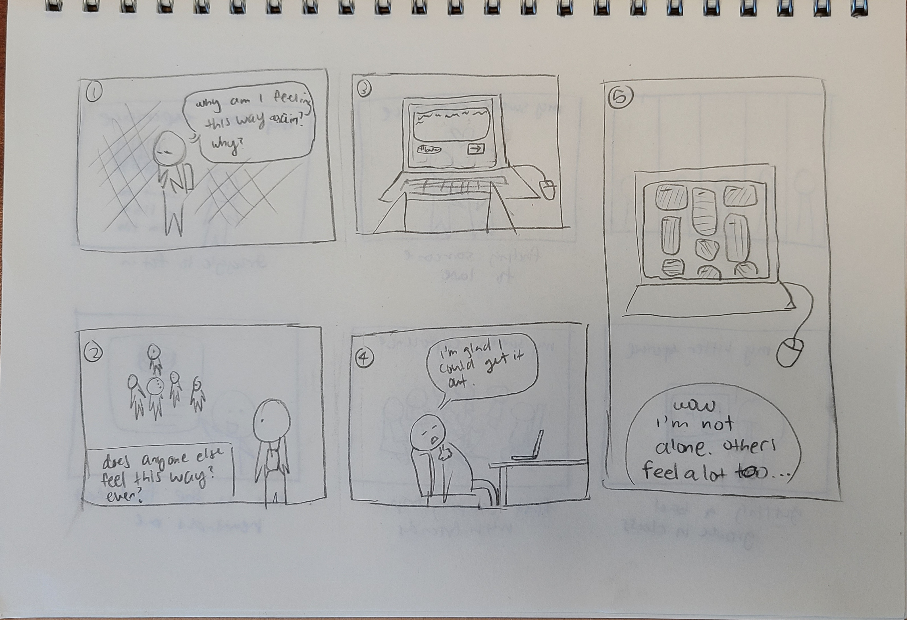
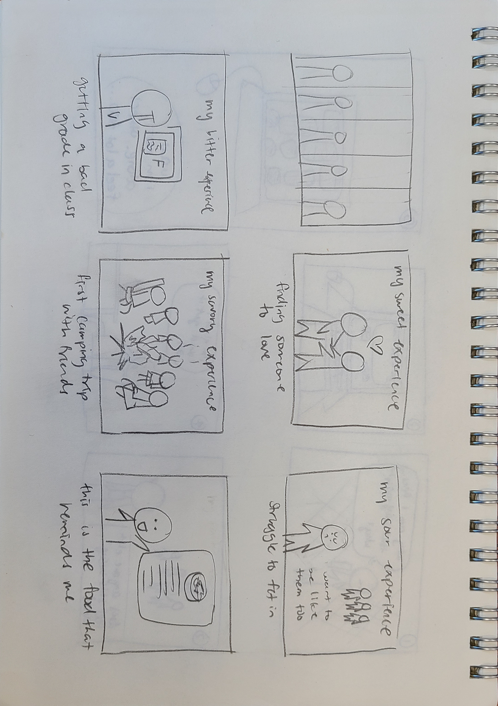

The first version was based on my original idea of having a platform with people sharing their emotions as senses of taste. From usability testing, my tester was very enthusiastic about this idea and thought incoporating color may be a good way in organizing the possible large amounts of entries there would be since my thought was just as a gallery wall. From there, I thought about having the users themselves choosing what category they would like to put their emotions in to.

The second version was a evolved idea from the original where the platform is more for a place for sharing emotional experiences by senses of taste. From usability testing, my tester thought the topic of senses connected to emotions was fresh and suggested I include more of the back story behind the meaning/connection of the sesne of taste before letting the audience in to make this project more impactful. After the 2 storyboard, I am leaning towards creating some sort of hybrid between the 2 but weighing heavier on the orignal idea.